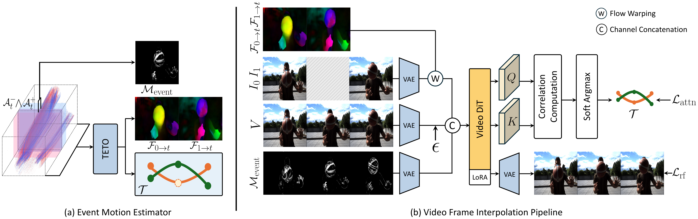

Video Frame Interpolation
Event cameras provide continuous motion signals during blind time between RGB frames — exactly the information needed for video frame interpolation. If this motion estimation is accurate, frame synthesis naturally follows. We condition a pretrained video diffusion transformer with three complementary signals from TETO: optical flow, point trajectories, and an event motion mask.
Architecture

- Flow warping — boundary frames warped to target timestamp for motion-aligned denoising initialization
- Event motion mask — \(\mathcal{M}_{\text{event}}\) from raw events directs generation toward dynamic regions
- Trajectory-guided attention — point trajectories supervise DiT self-attention for fine-grained correspondence
Ablation Study
Component Analysis on BS-ERGB
| Model | FID↓ | LPIPS↓ | PSNR↑ | SSIM↑ |
|---|---|---|---|---|
| TETO-VFI | 10.11 | 0.0821 | 25.42 | 0.8022 |
| − \(\mathcal{M}_{\text{event}}\) | 11.06 | 0.0867 | 23.58 | 0.8076 |
| − \(\mathcal{L}_{\text{attn}}\) | 10.82 | 0.0869 | 23.37 | 0.8014 |
| − \(\mathcal{F}_{\text{warp}}\) | 13.88 | 0.1203 | 21.96 | 0.7573 |

Explicit motion signals (flow warping, trajectory attention, event motion mask) guide the diffusion model to faithfully reconstruct fine-grained motion patterns such as ball seams and elastic deformations.
Quantitative Results
Video Frame Interpolation on BS-ERGB
| Method | ×1 | ×3 | ×6 | |||||||||
|---|---|---|---|---|---|---|---|---|---|---|---|---|
| FID↓ | LPIPS↓ | PSNR↑ | SSIM↑ | FID↓ | LPIPS↓ | PSNR↑ | SSIM↑ | FID↓ | LPIPS↓ | PSNR↑ | SSIM↑ | |
| TimeLens-XL | 15.29 | 0.0808 | 28.27 | 0.8223 | 38.11 | 0.0695 | 29.73 | 0.8367 | 38.11 | 0.1314 | 22.43 | 0.7574 |
| CBMNet-Large | 10.64 | 0.1667 | 29.23 | 0.7737 | 11.23 | 0.1730 | 28.46 | 0.7580 | 13.31 | 0.1791 | 27.67 | 0.7511 |
| RE-VDM | 16.37 | 0.1004 | 28.04 | 0.8631 | 16.66 | 0.1268 | 27.03 | 0.8119 | 19.40 | 0.1258 | 26.93 | 0.8426 |
| TETO-VFI | 10.41 | 0.0684 | 25.73 | 0.8346 | 7.65 | 0.0689 | 26.21 | 0.8314 | 7.88 | 0.0859 | 25.15 | 0.7955 |
Zero-shot Generalization on HQ-EVFI
| Method | ×1 | ×15 | ||||||
|---|---|---|---|---|---|---|---|---|
| FID↓ | LPIPS↓ | PSNR↑ | SSIM↑ | FID↓ | LPIPS↓ | PSNR↑ | SSIM↑ | |
| TimeLens-XL | 26.50 | 0.0601 | 25.51 | 0.8856 | 28.83 | 0.0579 | 25.67 | 0.8942 |
| CBMNet-Large | 18.92 | 0.0717 | 29.00 | 0.8849 | 26.19 | 0.0827 | 27.38 | 0.8767 |
| RE-VDM | 21.18 | 0.0605 | 26.95 | 0.8714 | 33.42 | 0.0801 | 25.56 | 0.8565 |
| TETO-VFI | 17.39 | 0.0401 | 26.75 | 0.9093 | 19.89 | 0.0501 | 25.36 | 0.8923 |
Without fine-tuning on HQ-EVFI, TETO-VFI achieves the best perceptual quality (FID, LPIPS).
Qualitative Results
TETO-VFI produces sharper boundaries and more faithful reconstructions in dynamic motion regions.